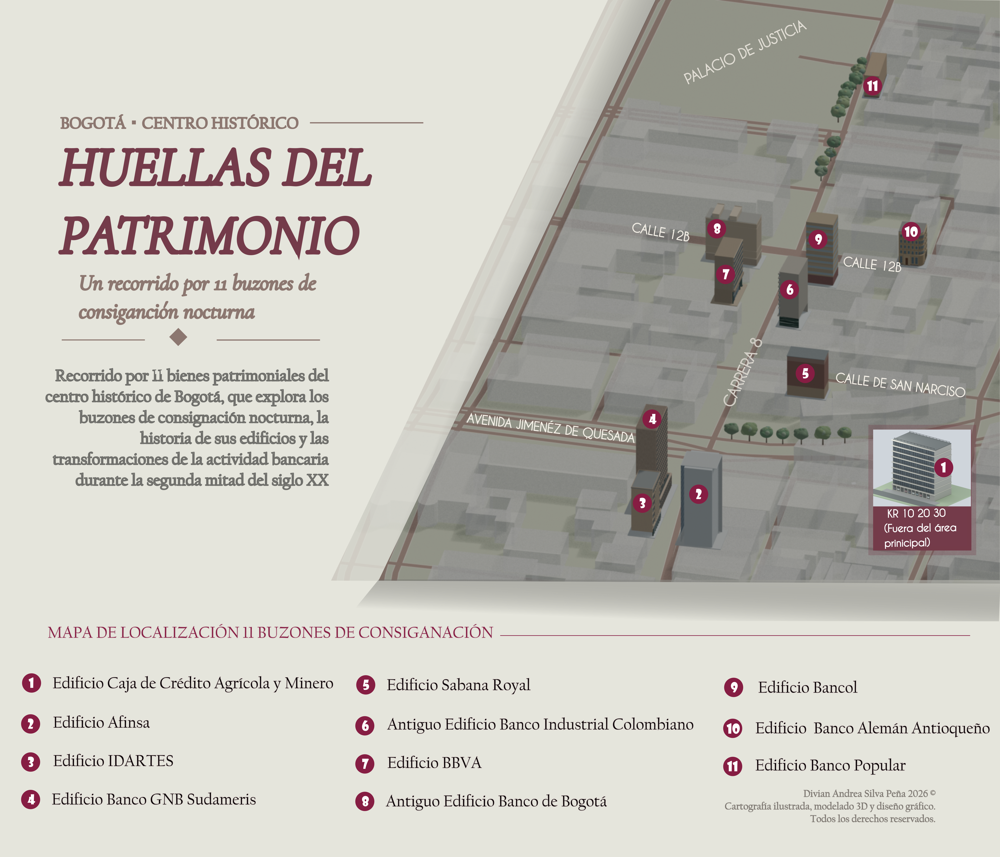

Camina por Bogotá
Recorre una recreación tridimensional del centro y observa los edificios desde la perspectiva de un peatón.

Entre las fachadas del centro de Bogotá sobreviven pequeños testigos de su historia bancaria: los buzones de consignación nocturna. Descubre sus historias y vuelve a mirar la ciudad.
Iniciar recorrido ↗Los buzones permitían depositar dinero fuera del horario de atención bancaria. Hoy, estas piezas nos invitan a conocer las transformaciones del comercio, la arquitectura y la vida cotidiana del centro de Bogotá.
Recorre una recreación tridimensional del centro y observa los edificios desde la perspectiva de un peatón.
Acércate a los buzones y descubre la historia de los objetos y de los edificios que los albergan.
Reúne diez postales con fotografías, historias y memorias del recorrido.
Explora a tu ritmo. En computador utiliza el teclado y el ratón; en celular encontrarás controles táctiles para desplazarte y mirar a tu alrededor.
Comenzar la experiencia ↗
Esta experiencia nace de una investigación académica sobre los buzones bancarios como objetos patrimoniales de Bogotá, en el marco de la asignatura Apropiación Social del Patrimonio Cultural de la Universidad de los Andes.
Investigación
Divian Andrea Silva Peña · Katherin Julieth Mahecha Galvis · Maria Alejandra Ramirez Toro · Oriana Escobar Castillo
Diseño y desarrollo de la experiencia web interactiva
Divian Andrea Silva Peña